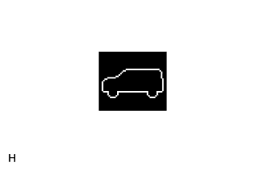

ПНЕВМАТИЧЕСКАЯ ПОДВЕСКА > СИСТЕМА ДИАГНОСТИКИ |
| СИСТЕМА ДИАГНОСТИКИ |
Контрольная лампа
Когда нарушается работа системы пневматической подвески, на мультиинформационном дисплее отображается предупреждение и включается главная контрольная лампа аварийного состояния.
Коды DTC (в нормальном режиме работы)
DTC сохраняются в ЭБУ управления подвеской и считываются с использованием портативного диагностического прибора. См. процедуру проверки диагностических кодов неисправностей DTC (стр. Нажмите здесь).
| ПРОВЕРЬТЕ КОНТРОЛЬНУЮ ЛАМПУ |
Включите зажигание (IG).
|  |
Убедитесь, что на мультиинформационном дисплее сначала примерно в течение 2 с отображается индикатор регулировки высоты, показанный на рисунке, а затем указывается текущая высота подвески автомобиля.